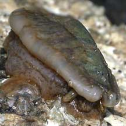
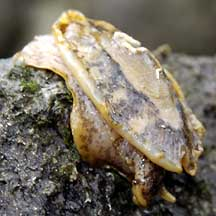
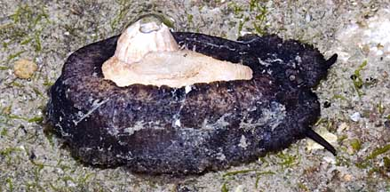
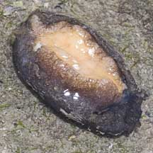
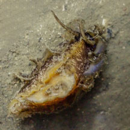

|
|
| shelled snails text index | photo index |
| Phylum Mollusca > Class Gastropoda > Limpets |
| Hoof-shield
limpet Scutus sp. Family Fissurellidae updated Aug 2020 Where seen? This large slug-like limpet is sometimes encountered on our Northern shores, under stones usually alone. 'Scutus' comes from the word 'suctum' which is the name of the Roman shield that the shell resembles. Features: Oval shaped animal (3-5cm). The body is a lot larger than its shell, usually folded up around the edges of the shell and may cover most of the shell. In fact, the shell might be completely covered by the mantle, so that it appears to be a slug at first glance. Hoof-shield limpets come in various colours. The body may be black or beige, and shell white or brown. It has a pair of short tentacles. Scutus unguis has an all-black body. Scutus sinensis is the only other species so far listed for Singapore. The hoof-shield limpet is a true limpet and breathes with gills. Unlike other members of the Family Fissurellidae, a hoof-shield limpet doesn't have a hole at the top of its shell. Sometimes confused with slugs which are snails without shells. Here's more on how to tell apart slugs and other slug-like animals. |
 Chek Jawa, Jul 02 |
 Chek Jawa, Apr 03. |
 Tuas, Mar 06 |
| What do they eat? According to Gosliner, they appear to
feed on colonial ascidians. Status and threats: Scutus unguis is listed as 'Endangered' on Red List of threatened animals of Singapore. According to the Singapore Red Data Book: "Once common on many rocky shores, it is now rare due to habitat loss. Seawalls do not appear to be a viable alternative habitat for this animal." |
|
 A barnacle grew on its shell! Changi, Dec 10 |
 Underside. Changi, Dec 10 |
|
| Hoof-shield limpets on Singapore shores |
On wildsingapore
flickr
|
| Other sightings on Singapore shores |
 |
|
Links
References
|